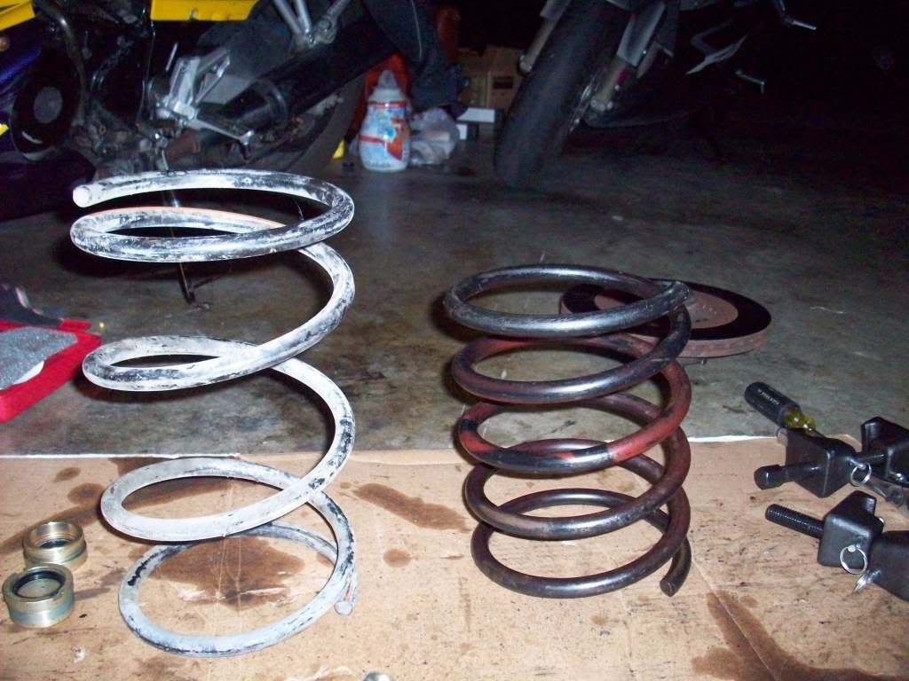
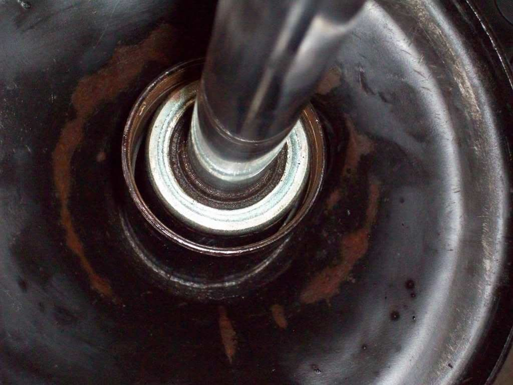

-

the one on the left came out of my 87na
but can anybody id the one on the right?
also, is there supposed to be this much gap between the strut and the housing?
or did i get the wrong ones?

there is a lot of wiggle room in there. -
My tokicos were very tight in the tube, so tight i had to grind the label off of them to get them to fit. That looks like NA shocks in a turbo tube..1985 NA2T(now RB) * 1988 SS x2 * 1984 AE x3 * 2006 350Z

-
I just removed my stock cartridges this past weekend. There is a little seal that is suppose to go around the top that fills that gap/prevents the wiggle. The body of the cartridge will still be very loose in the strut tube.
My 2 cents based on what I saw when I took mine apart.
When I put my tokico's in, they were a different design. They were a bigger diameter and filled the entire tube. There was no seal to install on the top like the stock set up.<<SOLD>>
87' NA 5speed GL <-- "Gett'in Laid" (Not so much right now actually)
17" Panasport C5C2 "G7" wheels
Suspension Techniques Springs / HP Blues…

-
You can see a picture of the seal in my thread from this past weekend.
viewtopic.php?f=2&t=16561<<SOLD>>
87' NA 5speed GL <-- "Gett'in Laid" (Not so much right now actually)
17" Panasport C5C2 "G7" wheels
Suspension Techniques Springs / HP Blues…
-
the springs i bought from some character that claimed they were for a z.
my car is an 87na and i ordered na strut cartridges, did i get the wrong part or did my na happen to come with turbo tubes?
do tokico sturts not require a seal and others do? there was no seal in mine. -
I don't believe the Tokico's require a seal. They didn't come with one. I didn't re-use the old one as it wouldn't have fit anyway.
Are those Tokico's in the picture you posted? If so, I would say they are fitting differently than mine. My car is a 87 NA as well.<<SOLD>>
87' NA 5speed GL <-- "Gett'in Laid" (Not so much right now actually)
17" Panasport C5C2 "G7" wheels
Suspension Techniques Springs / HP Blues…
-
Let me comment on my last comment as it's a bit hard to tell from the picture you posted.
My tokico's slid into the tube with no resistance. There is very slight play. It's suppose to have a little play so oil can be in the tube around the cartridge.
I didn't put a seal around the "top" of the cartridge where the gland nut attaches. I don't think the old one would have worked (size wise) and the new cartridge didn't come with one.
I just dropped the tokico cartridge in (with oil around them) and re-installed the gland nut. Like I said, it had a smidge of wiggle, but it wasn't sloppy wiggle. (hope that helps…)<<SOLD>>
87' NA 5speed GL <-- "Gett'in Laid" (Not so much right now actually)
17" Panasport C5C2 "G7" wheels
Suspension Techniques Springs / HP Blues…

Copyright © 2006–. All rights reserved. Privacy Policy